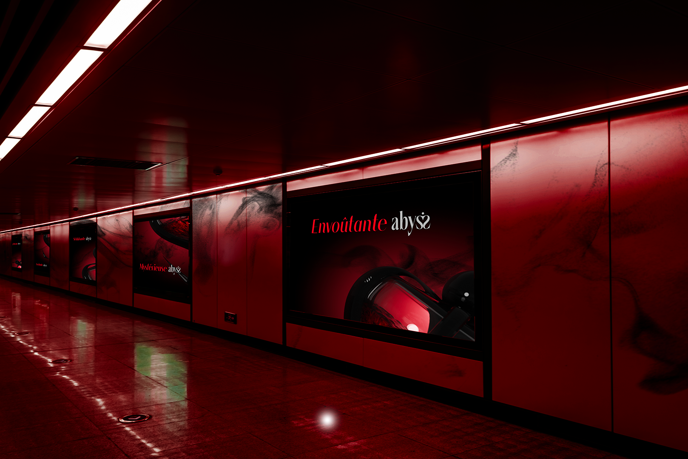
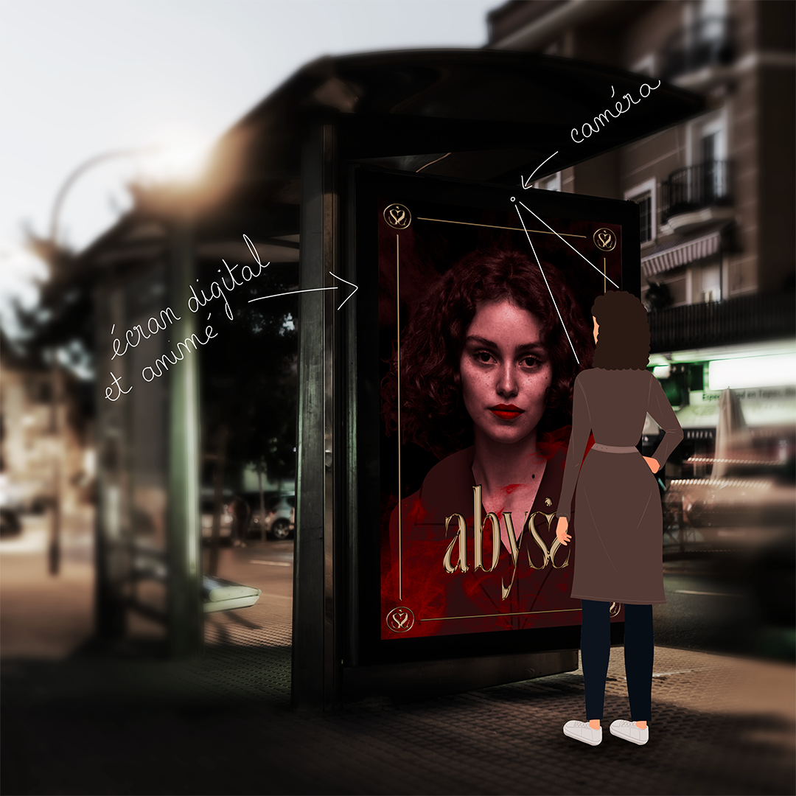

Trouver une phrase un peu stylée
Abyss
DA, Branding, Création 3D, Pub & Webdesign
Ce projet est actuellement en cours. Mise à jour le 02/01/2024.
Abyss est une marque cosmétique, proposant parfums, maquillage et bijoux. Afin de se faire connaître, la marque souhaite créer son univers avec un branding cohérent, mettant en avant le pouvoir envoutant de ses produits. À la limite du surnaturel, Abyss nous fait entrer dans un monde mystérieux, mystique, et nous attire vers la fontière onirique...
Objectifs :
- Créer la DA de la marque
- Créer le branding de la marque Abyss, traduire l'univers dans lequel elle se développe
- Inventer les produits et les modéliser
- Communiquer autour de la sortie des produits (parfums, make up et bijoux)
- Maquetter les pages principales du site web
Identité visuelle
Création de la charte graphique version courte de la marque Abyss.
Abyss est une marque cosmétique, proposant parfums, maquillage et bijoux. Afin de se faire connaître, la marque souhaite créer son univers avec un branding cohérent, mettant en avant le pouvoir envoutant de ses produits. À la limite du surnaturel, Abyss nous fait entrer dans un monde mystérieux, mystique, et nous attire vers la fontière onirique...
Objectifs :
- Créer la DA de la marque
- Créer le branding de la marque Abyss, traduire l'univers dans lequel elle se développe
- Inventer les produits et les modéliser
- Communiquer autour de la sortie des produits (parfums, make up et bijoux)
- Maquetter les pages principales du site web
Identité visuelle
Création de la charte graphique version courte de la marque Abyss.

Modélisation 3D
Création de la bouteille de parfum en 3D. Le flacon est son contenant font penser à un poison. Le parfum est envoutant et rend la femme moderne séduisante. Il fait prendre confiance en soi.
Publicité
Concept de pub dans le métro : les affichages des pub du parfum Abyss sont statiques, mais les murs sont, eux, digitaux. Sur ces écrans s'affichent l'effet de fumée, comme une vaporisation de parfum.
Concept de pub sur un abribus : l'écran est digital, et renvoie l'image de la personne qui se tient en face de lui. Un filtre est ajouté sur le visage de la personne ; l'objectif n'est pas de dénaturer la personne en la maquillant, mais en rajoutant simplement des effets de contraste et de couleurs pour faire ressortir son côté séduisant, qu'iel ne soupçonnait pas. Abyss rend la femme forte et lui permet de prendre confiance en elle.

